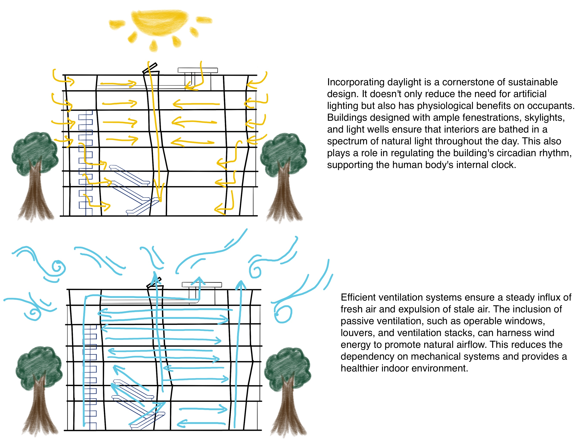

Architectural Analysis Portfolio of Toyo Ito's Sendai Mediatheque
By: Yang(Cindy) Jin, September 2023
What is important about Toyo Ito’s Sendai Mediatheque?
The Sendai Mediatheque, designed by the visionary architect Toyo Ito,
stands as an emblematic representation of 21st-century architectural innovation.
Distinctively positioned at the intersection of art, nature, and technology,
this edifice redefines traditional paradigms of building design and public
space utilization.
At the heart of its aesthetic allure is the building's transparent façade,
an audacious move that dissolves barriers between the interior and the external
world, inviting a dialogue between the structure and its environment. But beyond
mere visual appeal, this transparency symbolizes a democratic access to knowledge
and culture, consistent with the building's function as a mediatheque.
One of the building's most mesmerizing features is its series of tree-like
columns, which meander and stretch upwards, mimicking the organic forms found in nature.
These columns, aside from their structural significance, serve as a philosophical
statement, blurring the lines between the built environment and the natural world,
echoing a harmony that modern urban structures often lack.
Functionally, the Sendai Mediatheque is a marvel of multifunctionality.
It accommodates a range of activities, from reading and research to exhibitions
and events, making it a dynamic hub of community engagement and cultural exchange.
Beyond its tangible attributes, the building resonates with deeper undertones.
It challenges our preconceived notions of what a public building should be, prompting
discussions on transparency, fluidity, and societal interaction. In essence, the Sendai
Mediatheque isn't just a structure; it's a profound statement on the evolving
relationship between humans, spaces, and the broader environment, making it an essential
touchstone in contemporary architectural discourse.
Contextual
Programmatic
Cartographic - Plans/Sections
Spatial - Perceptual
Material
Formal - Volumetric
Structural
Environmental - Systems
Informational - Management
Conceptual